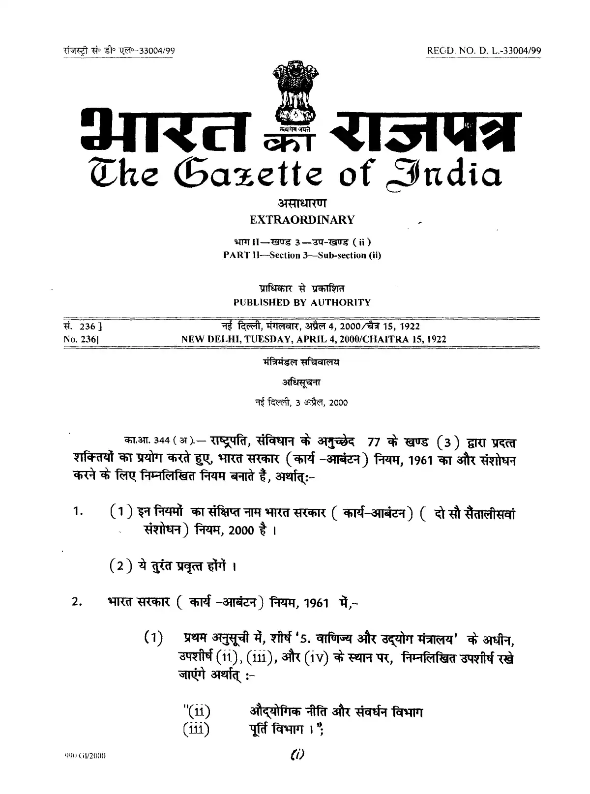
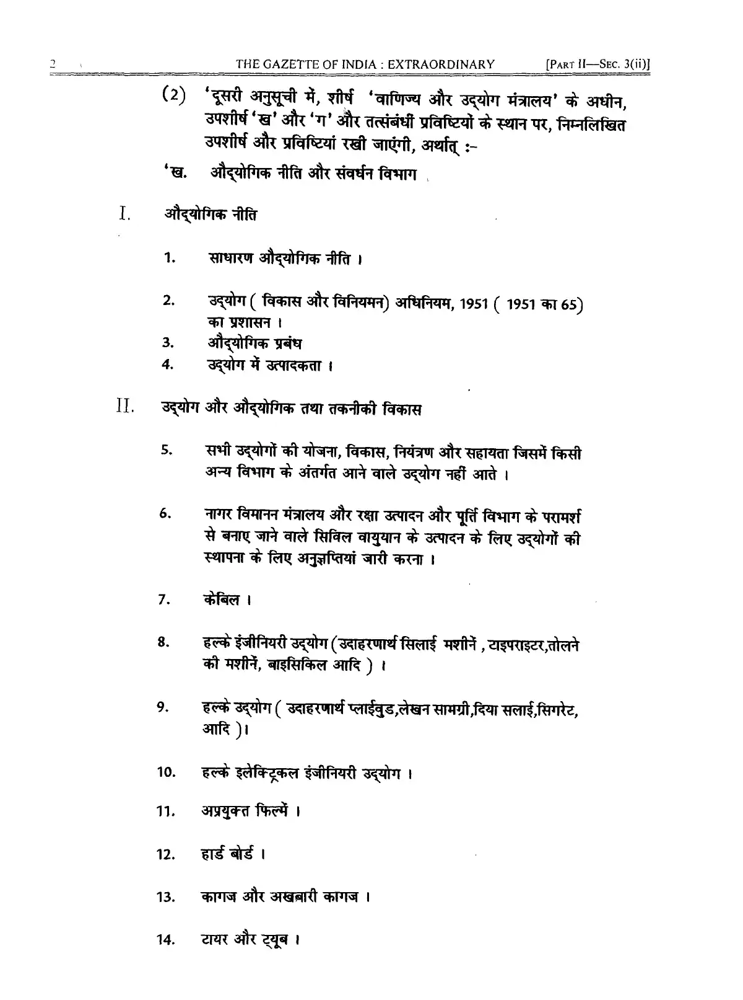
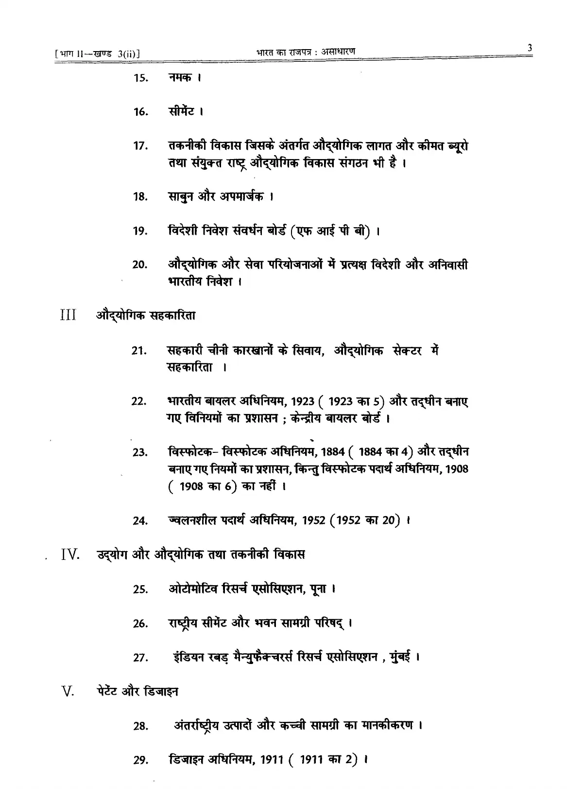
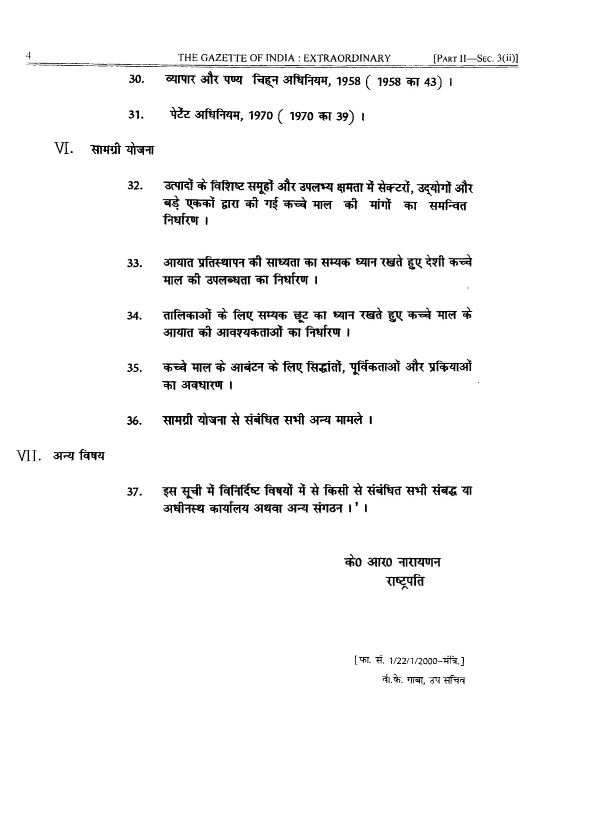
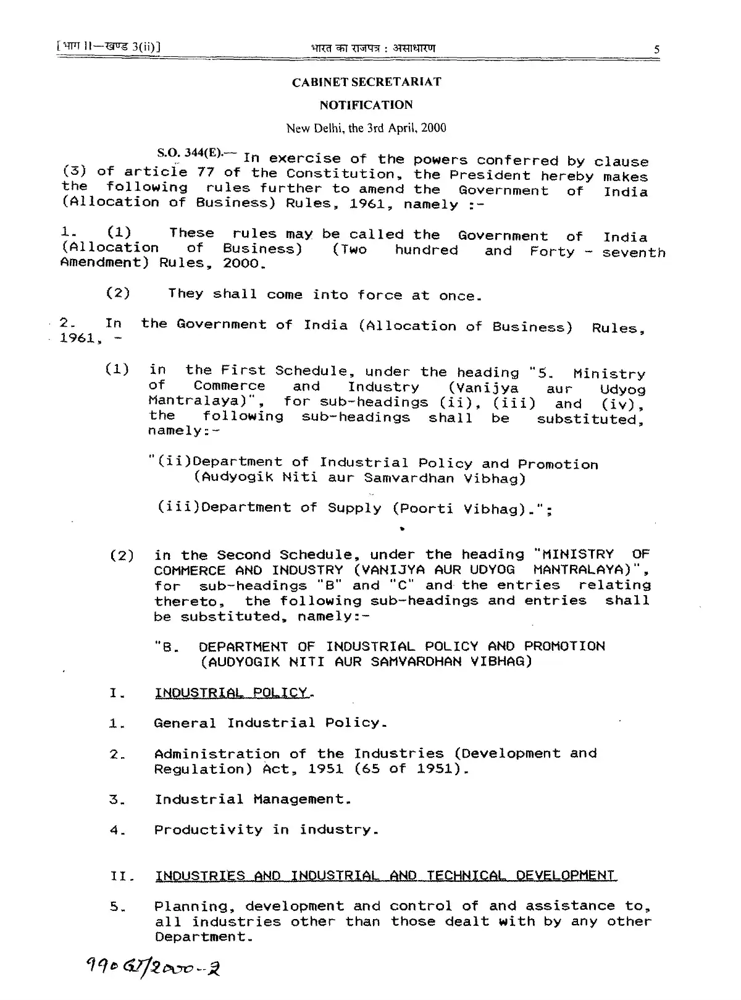
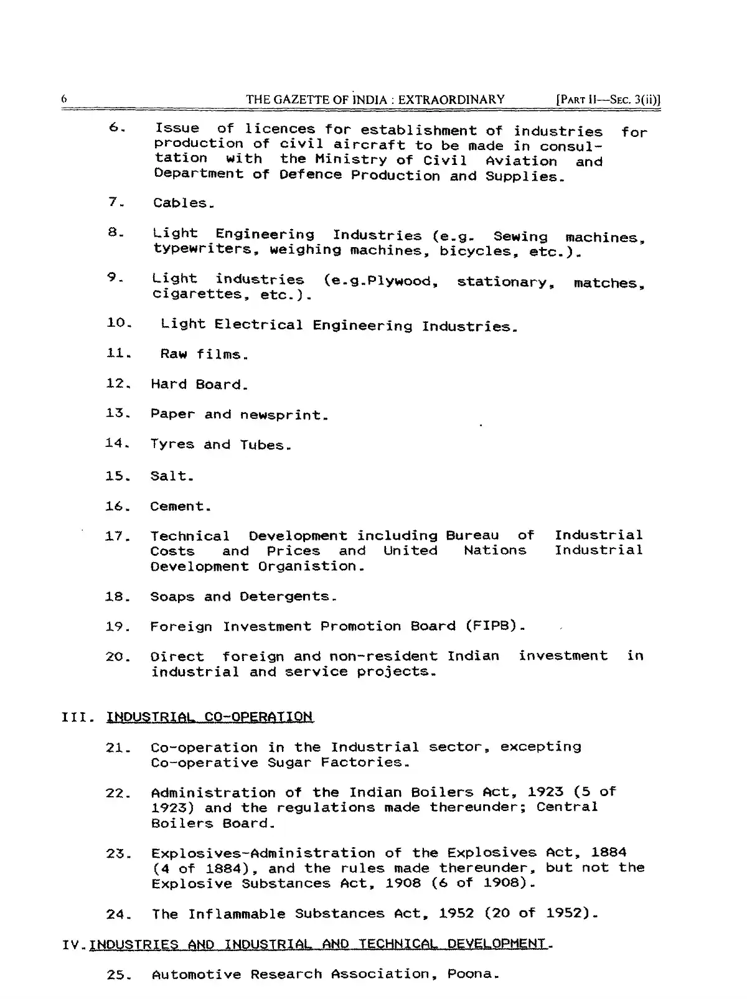
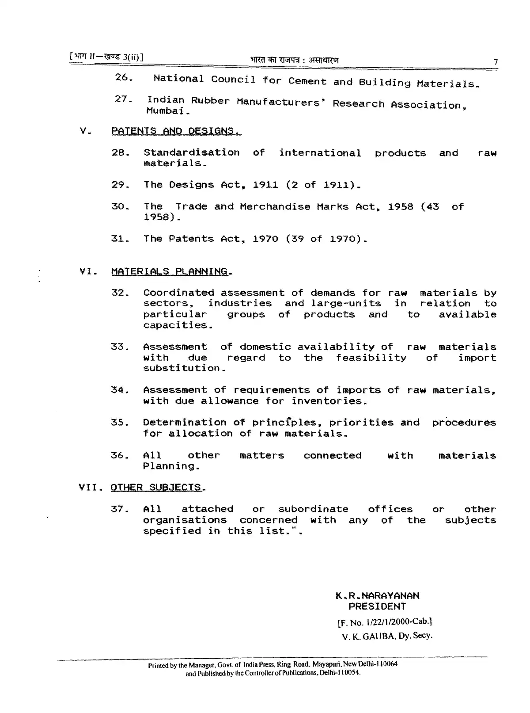

Amendment #247 (S.O. 344(E), 2000)
2 changes: 1 to the First Schedule, 1 to the Second Schedule. 1 applied1 not applied
The order, page by page
Page 1 of 8

Page 2 of 8

Page 3 of 8

Page 4 of 8

Page 5 of 8

12Schedule 1 › Ministry of Commerce and Industry › (ii); Schedule 1 › Ministry of Commerce and Industry › (iii); Schedule 1 › Ministry of Commerce and Industry › (iv)
- ii. Department of Industrial Policy and Promotion
- iii. Department of Supply
applied at schedule 1 › ministry 5 › department ii in the Rules after #247
Schedule 2 › MINISTRY OF COMMERCE AND INDUSTRY › B; Schedule 2 › MINISTRY OF COMMERCE AND INDUSTRY › C
- B. DEPARTMENT OF INDUSTRIAL POLICY AND PROMOTION
- I. INDUSTRIAL POLICY.
- 1. General Industrial Policy.
- 2. Administration of the Industries (Development and Regulation) Act, 1951 (65 of 1951).
- 3. Industrial Management.
- 4. Productivity in industry.
and 38 more
- II. INDUSTRIES AND INDUSTRIAL AND TECHNICAL DEVELOPMENT
- 5. Planning, development and control of and assistance to all industries other than those dealt with by any other Department. 99067/2000-2 6 [PART 1 SEC. 3(ii)]
- 6. Issue of licences for establishment of industries for production of civil aircraft to be made in consultation with the Ministry of Civil Aviation and Department of Defence Production and Supplies.
- 7. Cables.
- 8. Light Engineering Industries (e.g. Sewing machines typewriters, weighing machines, bicycles, etc.).
- 9. Light industries (e.g.Plywood, stationary, matches cigarettes, etc.).
- 10. Light Electrical Engineering Industries.
- 11. Raw films.
- 12. Hard Board.
- 13. Paper and newsprint.
- 14. Tyres and Tubes.
- 15. Salt.
- 16. Cement.
- 17. Technical Development including Bureau of Industrial Costs and Prices and United Nations Industrial Development Organistion.
- 18. Soaps and Detergents.
- 19. Foreign Investment Promotion Board (FIPB).
- 20. Direct foreign and non-resident Indian investment in industrial and service projects.
- III. INDUSTRIAL CO-OPERATION
- 21. Co-operation in the Industrial sector, excepting Co-operative Sugar Factories.
- 22. Administration of the Indian Boilers Act, 1923 (5 of 1923) and the regulations made thereunder; Central Boilers Board.
- 23. Explosives-Administration of the Explosives Act, 1884 (4 of 1884), and the rules made thereunder, but not the Explosive Substances Act, 1908 (6 of 1908).
- 24. The Inflammable Substances Act, 1952 (20 of 1952). IV INDUSTRIES AND INDUSTRIAL AND TECHNICAL DEVELOPMENT.
- 25. Automotive Research Association, Poona. 7
- 26. National Council for Cement and Building Materials.
- 27. Indian Rubber Manufacturers” Research Association Mumbai.
- V. PATENTS AND DESIGNS.
- 28. Standardisation of international products and raw materials.
- 29. The Designs Act, 1911 (2 of 1911).
- 30. The Trade and Merchandise Marks Act, 1958 (43 of 1958).
- 31. The Patents Act, 1970 (39 of 1970).
- VI. MATERIALS PLANNING.
- 32. Coordinated assessment of demands for raw materials by sectors, industries and large-units in relation to particular groups of products and to available capacities.
- 33. Assessment of domestic availability of raw materials with due regard to the feasibility of import substitution.
- 34. Assessment of requirements of imports of raw materials with due allowance for inventories.
- 35. Determination of principles, priorities and procedures for allocation of raw materials.
- 36. All other matters connected with materials Planning.
- VII. OTHER SUBJECTS.
- 37. All attached or subordinate offices or other organisations concerned with any of the subjects specified in this list.
not applied (the change could not be placed in the Rules as read; see How this document was read)
read page break
Page 6 of 8

Page 7 of 8

Page 8 of 8
How this document was read
Known issues
| Change | Issue | Known as |
|---|---|---|
| 2 | change 2: no department B under schedule 2 › ministry MINISTRY OF COMMERCE AND INDUSTRY | A unit cited by a name the Second Schedule does not have |
From the Government of India (Allocation of Business) Rules, 1961 and their amendments, as published by the Cabinet Secretariat (cabsec.gov.in), read by orgpedia. The readings of the older scanned gazettes have known gaps.